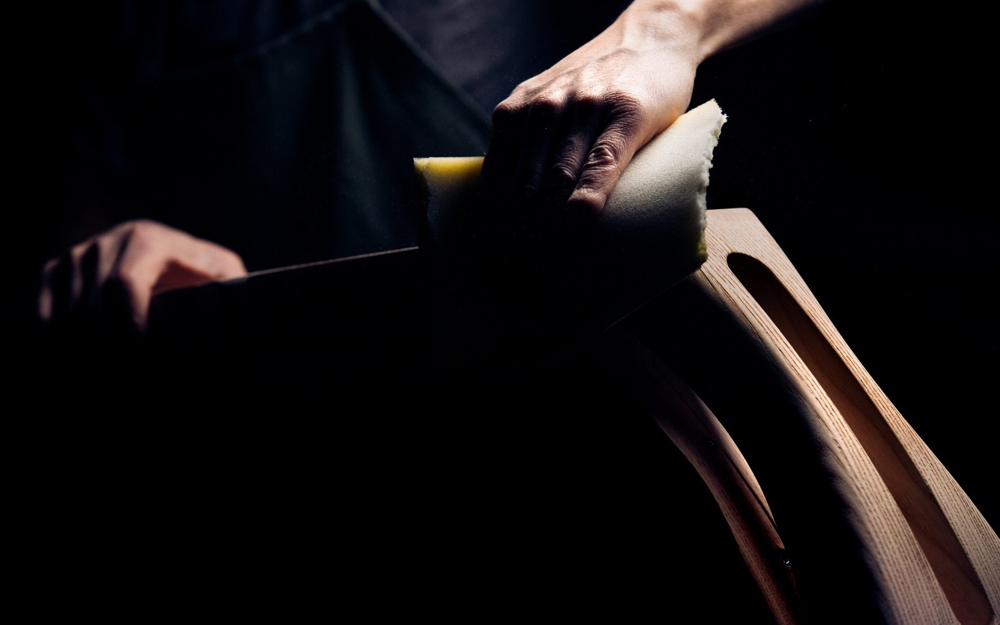
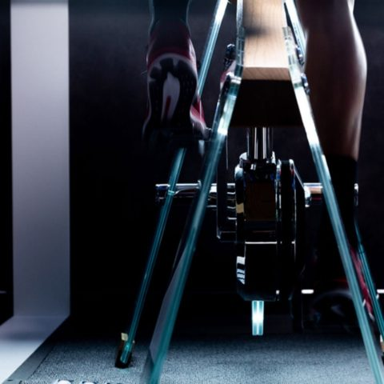
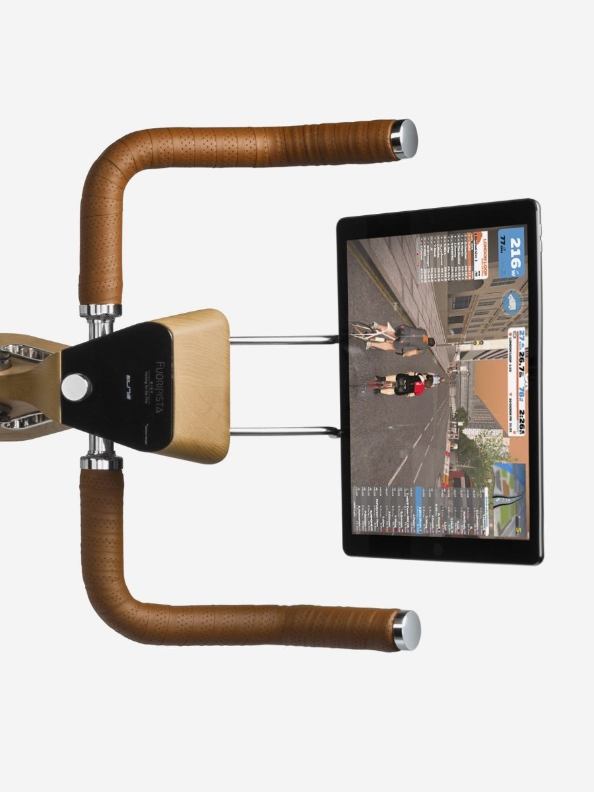

FUORI
PISTA
BIKE
The innovative stationary bike for indoor workouts becomes a sculptural element with an iconic image.
Perfect
fitting
Through handlebar and saddle adjustment you can customize your Bike depending on your physique - S size to XL size - so you always maintain the proper posture while working out.
An accessory for XXL size is available upon request.
maximum load 110kg
Road-like
feel
The oversized flywheel and virtual gear shifter ensure highly realistic pedalling , for a truly engaging experience.
The freewheel bearing lets you stop pedalling without interfering with the flywheel and without blocking the pedals, as it happens for instance on spinbikes.
maximum load 110kg
maximum load 110kg
Disital e
smart
Many types of workout thanks to the double wireless communication protocol (ANT+ and Bluetooth) and compatibility with Elite My E-Training and other indoor workout software (Zwift, etc.). The OLED display interfaces with the user to show workout session data.
Perfect
fitting
Featuring a rechargeable battery, the Bike can be freely installed as it needs no power supply. Moreover, its technology makes it bery quiet so you can pedal anytime, anywhere.
Technology makes this Bike always ready so it's an integral part of your workouts, a supplement of your outdoor rides.
Operating time
DESIGN
Fuoripista Bike
states the concepts of well-being and workouts in an unprecedented way with a sophisticated approach.
IT'S AN "EXPERIENTIAL" PROJECT DESIGNED FOR OUR DAILY LIVES.
DECO
RATE
THE
SPACES
It's a highly appealing product, refined to its minutest details , to show off, that ensures ergonomic solutions, advanced technological content and certified technical accuracy.
Its formal lines and warm materials distinguish it from traditional sports equipment.
Available in two colour variants, natural wood or black painted wood

MATERIALS
Made in Italy, with natural valuable materials, super-performing, Fuoripista Bike introduces a totally new design sporting beauty, elegance and formal neatness.
A UNIQUE AND PRECIOUS OBJECT, DESIGNED TO LAST FOR A LONG TIME.
DECO
RATE
THE
SPACES
Valuable materials, selected also because they're natural and sustainable, ideal to share the environment daily with those who inhabit it. Created to have no end-of-life, it's a responsible, inherently 'green' choice.
12mm tempered
glass just like the
Ø 50cm, 15 kg
flywheel, one of
the biggest in the
indoor training
world.

CRAFTSMANSHIP
Fuoripista Bike is a product of expertise, carefully selected to get to the highest quality product possible.
A MEETING OF VALUABLE MATERIALS AND HIGH CRAFTSMANSHIP.
DECO
RATE
THE
SPACES
The subsequent manufacturing phases for the various materials all end up with the assembly and test of the product.
— The manufacturing process goes by the expert hands of craftsmen that evolve their know-how to create a totally Italian product.
-
The tenacity of wood
ACCURATE COMPUTER-CONTROLLED THREE-AXIS MILLING MACHINES CARVE THE SOLID ASHWOOD OF THE FUORIPISTA VIKE MAIN FRAME, THEN TH FINAL REFINING PHASE IS LEFTTO THE EXPERIENCE OF CRAFTSMEN.
-Wood,as a natural material, offers grain and tones that are always slightly different:each piexe is unique.
-
THE STRENGTH OF GLASS
ACCURATE COMPUTER-CONTROLLED THREE-AXIS MILLING MACHINES CARVE THE SOLID ASHWOOD OF THE FUORIPISTA VIKE MAIN FRAME, THEN TH FINAL REFINING PHASE IS LEFTTO THE EXPERIENCE OF CRAFTSMEN.
-Wood,as a natural material, offers grain and tones that are always slightly different:each piexe is unique.
-
THE ACCURACY OF ATHLETES
ACCURATE COMPUTER-CONTROLLED THREE-AXIS MILLING MACHINES CARVE THE SOLID ASHWOOD OF THE FUORIPISTA VIKE MAIN FRAME, THEN TH FINAL REFINING PHASE IS LEFTTO THE EXPERIENCE OF CRAFTSMEN.
-Wood,as a natural material, offers grain and tones that are always slightly different:each piexe is unique.
CRAFTSMANSHIP
Fuoripista Bike offers many functional features and advanced equipment to try out any kind of workout.
You can ride on real courses, virtual ones and GPS courses - you can also connect to the community to make your workout more fun by pedalling with other riders.

AD
VAN
CED
Bike monitors all of your performance data, working out with a virtual coach based on your goals.

SOFTWARE
BIKE`S DOUBLE COMMUNUCATION PROTOCOL WIRELESSLT INTERACTS WITH ANY APP, SOFTWARE,COMPUTER,CYCLE COMPUTERM SMARTPHONE AND TABLET TERMINAL.
— It doesn't just interface with the Elite's My E-Training software, it does with all commercially available indoor cycling platforms.